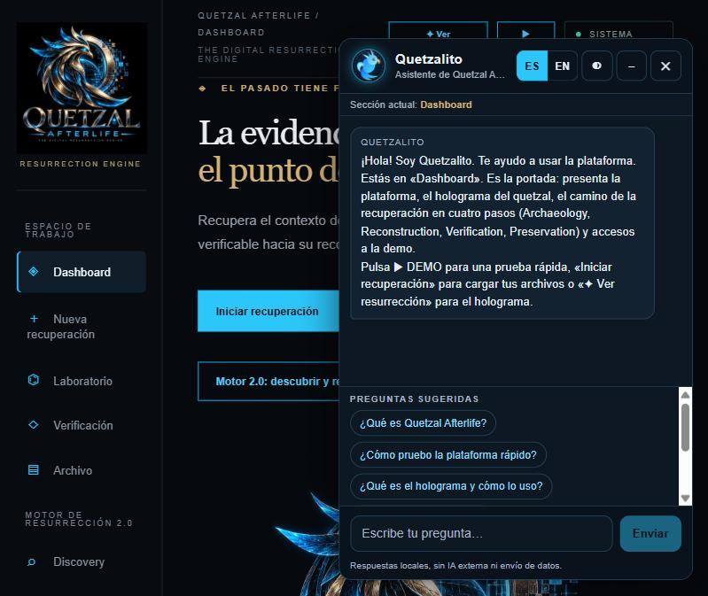
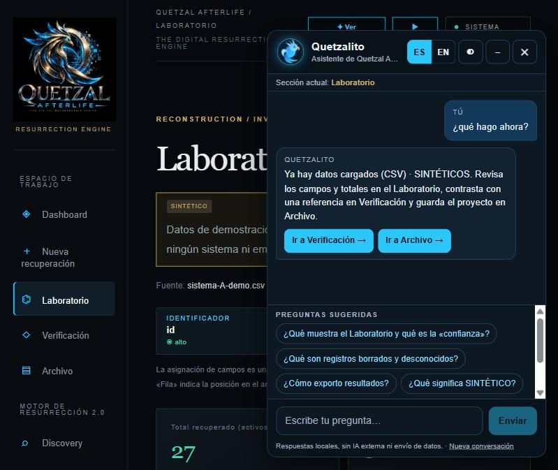
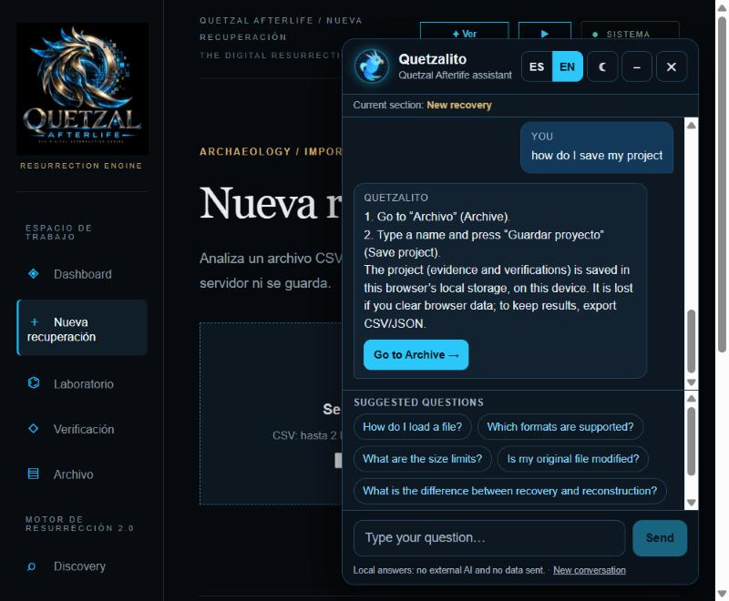
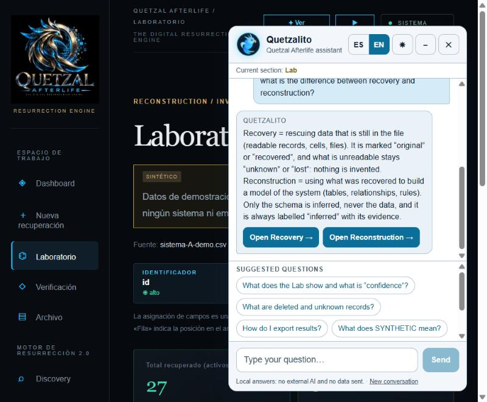
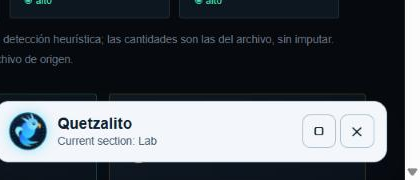
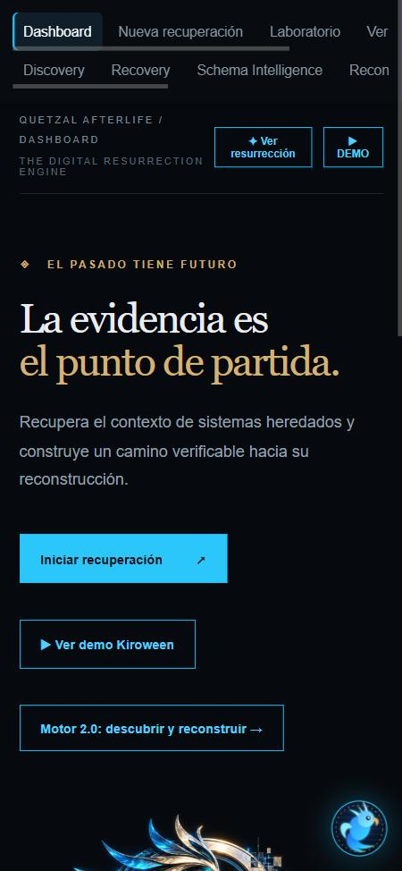
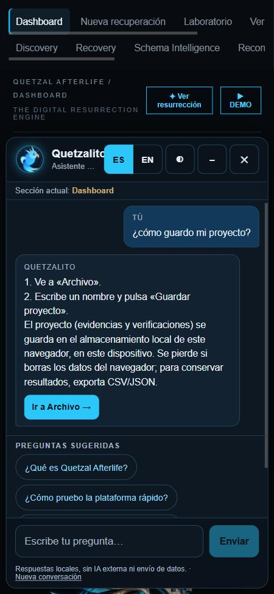
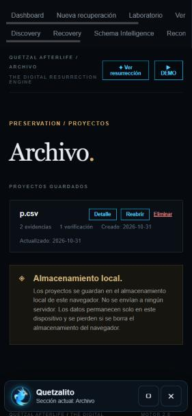

Quetzalito (preview, sin producción)
Avatar y botón flotante
Escritorio

Dashboard · español · oscuro (saludo contextual)

Laboratorio con datos SINTÉTICOS · «¿qué hago ahora?»

English · dark · New recovery

English · light · Lab (avatar en micro-escenario oscuro)

Minimizado
Móvil 375 px


